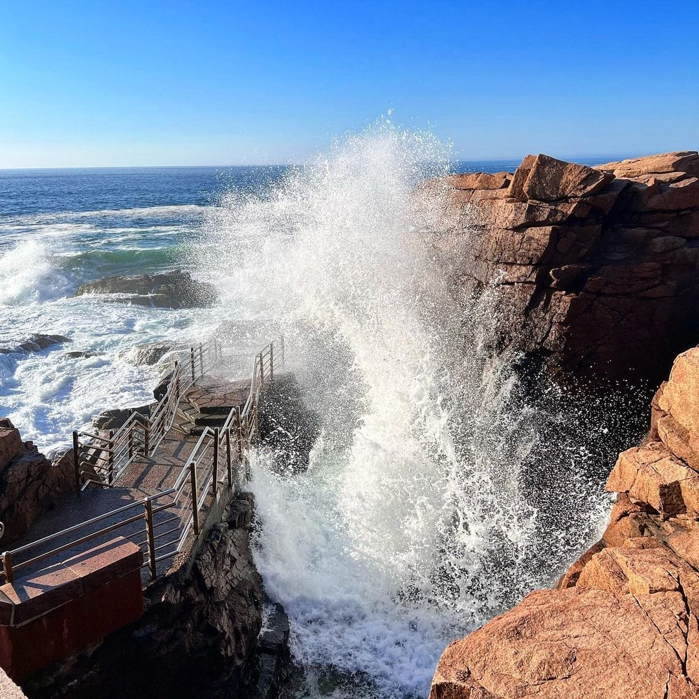
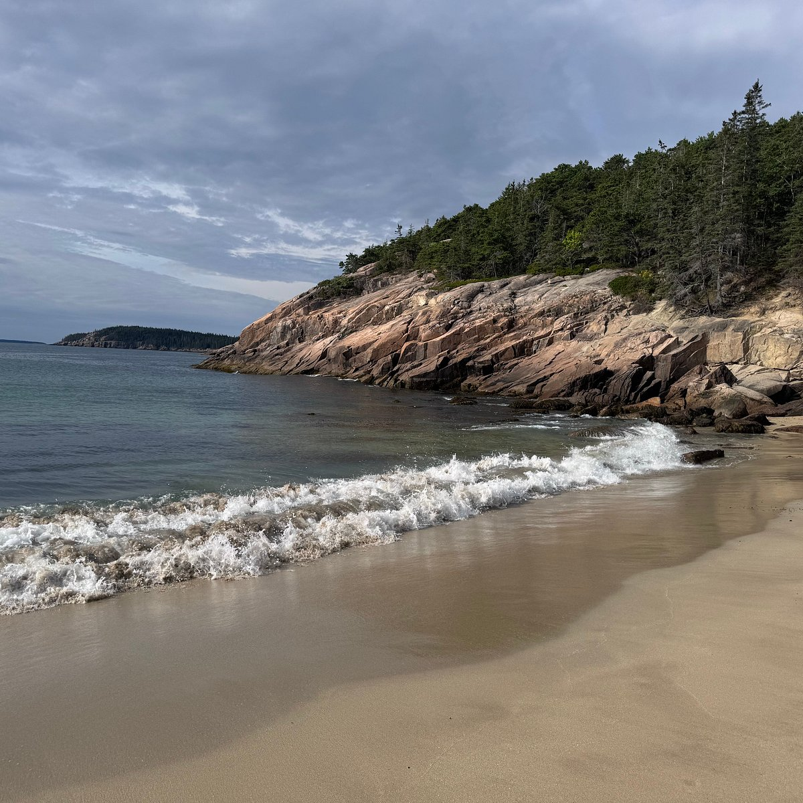
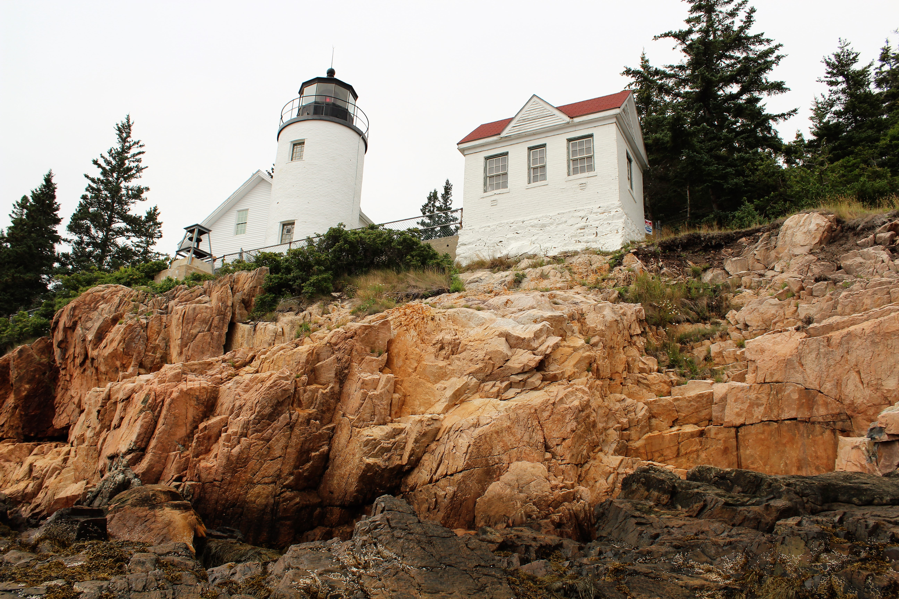

About Acadia National Park
Acadia National Park was established in as a monument in 1916 and later recognized as a national park in 1929. It has over 47,000 acres of land that run along the coast and also cover the forest Some of the land that is known as Acadia National park is also a known as Mount Desert Island. The park has many lakes, forests, mountains, and coastline. Thisu part is more popular in the fall when all of the leaves begin to chnage colors.
Popular Coastal Attractions
Thunder Hole
Thunder Hole is a small inlet where waves crash into, there is stairs that lead down to this. When the waves are large enought they slam into the rocks and cause a loud thunder like sound hense the name.
Sand Beach
Sand Beach is one of the most popular spots in this national park and it is surrounded by rocky cliffs along the coastline. This beach is a great spot for people to take a break and look at the scenery.
Bass Harbor Head Lighthouse
Bass Harbor Head Lighhouse is a historic lighthouse that overlooks the coastline of Maine. It was built in 1858 and it rests along a rocky coastline that overlooks the Atlantic Ocean.
Cadillac Mountain
Mountain Views
cadillac Mountain is one of the most popular places in Acadia National part to visit. This mountain only reaches around 1,530 feet above seas level and is the tallest mountain on the eastern coastline. Hikingto the summit is something that visitors often do and look out into the blue water of the Atlantic and the surrounding islands that are nearby.
Explore the Scenery


